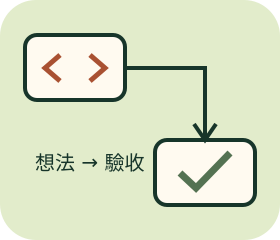

IDEA → SMALL CHANGE → EVIDENCE
Vibe Coding
知識庫
可以靠AI起步，不把「看起來能跑」當作完成。

先查一張卡，再動手一小步
12張知識卡、4個階段、6個情境挑戰。這裡不連接AI、不執行程式、不操作真實Git或憑證；內容是可參考的工作方法，不是任何工具的完整官方手冊。
無帳號，不儲存／上傳搜尋與作答；重新整理清空本輪。展開知識卡不會自動算學會；挑戰分數也不是實際開發能力認證。
知識卡索引
沒有符合的卡片。試試縮短關鍵字，或改選全部。
情境挑戰：把原則用一次
單選、複選和流程排序；所有證據都直接列在題目中，可回頭查卡片。首次與最近結果分開，不因重試覆寫。
完整回顧
接著用自己的話說明一項改動的目的、驗證方法與尚未確定之處；本頁不替自由筆記評分。
小任務協作模板
目標與使用者： 現有專案／相關檔案： 要做的核心行為： 這次不做： 可修改範圍與對外操作授權： 不得暴露的資料： 驗收案例（正常／錯誤／邊界）： 完成回報：改了什麼、實際驗證、未驗證事項。 回復與下一步：
只產生本機下載檔，不送給任何AI或伺服器。
延伸練習與參考
提問與下指令 · Git時光機 · GitHub／GitLab協作 · 筆記修復工坊
查核日2026-11-13。卡片為原創白話整理與實務建議，參考MDN除錯教學、GitHub程式審查文件與OWASP秘密管理指南；各卡附對應延伸來源。不背書特定模型、價格或保證自動寫出的程式安全。